Text size: smaller | normal | larger Width: narrow | normal | wide Scroll animation: system | on | off
September 2026
[ Code ] [ README ] [ Data ] [ Demo ]
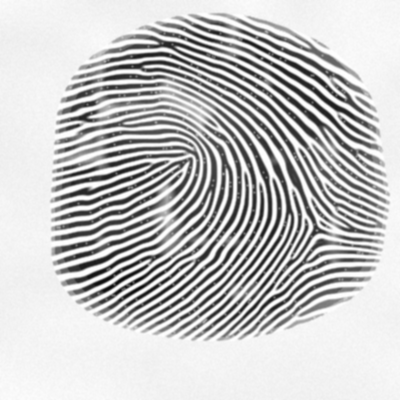
The fingerprint for the seed actual-fingerprints.
This library synthesises fingerprint images procedurally. A seed string is hashed into a pseudorandom stream, which selects a pattern class, places the singular points, and derives a ridge orientation field. Ridges are then grown by repeatedly filtering a sparse set of nucleation points with oriented Gabor kernels until the field is filled. Nothing is drawn by hand and no reference images are used. Ridge endings and bifurcations are not placed; they emerge where growth fronts meet out of phase. The same seed produces byte-identical output on any machine and any JavaScript engine, a property that required replacing the standard library's transcendental functions. It was written for a game server that needed one believable print per character without storing images: the seed is the record and the print is regenerated on demand in about a tenth of a second.
Each call returns a grayscale image at 320 by 400 pixels, roughly a fingertip at 500 dots per inch, together with the silhouette mask, the pattern class, the mean ridge period, and the full list of minutiae with positions, angles and types.
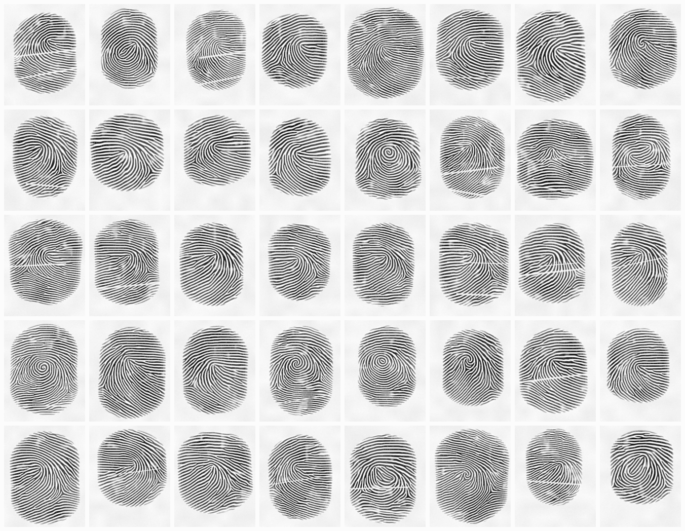
Figure 1: Forty prints from consecutive seeds citizen-2001 to citizen-2040, rendered through the impression pass. Loops, whorls and arches appear roughly in the proportions found in the general population because the class is drawn from those frequencies.
The raw output is a clean ridge map. A second pass, described in section 7, adds what an actual impression leaves behind: uneven pressure, pores, dry patches, flexion creases and paper texture.
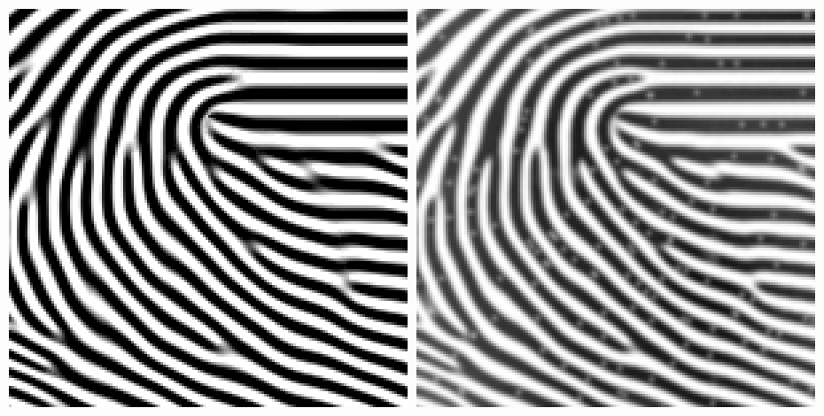
Figure 2: The same 150 by 150 pixel region at three times magnification. Left, the raw generator output. Right, after the impression pass. The ridges are identical; only the rendering differs.
[ contents ]
The generator is arithmetic over typed arrays and runs unmodified in a browser. Below is the actual library, bundled to 17 kilobytes, generating in your own browser rather than serving a stored image. Type any seed.
Enter the same seed twice and the image is identical to the last bit, here and on the machine that produced every figure on this page. Enter two different seeds and nothing is shared between them.
The matcher compares minutiae sets rather than pixels. It searches alignments and counts how many features land on top of each other within tolerance.
[ contents ]
The first draw from the seeded stream picks a class. The weights approximate the distribution reported for the general population, with whorls split into their Henry subtypes.
| Class | Weight | Singular points |
|---|---|---|
| left loop | 315 | one core, one delta to the right |
| right loop | 315 | one core, one delta to the left |
| plain whorl | 240 | two cores, two deltas |
| double loop | 40 | two cores on a tilted axis, two deltas |
| central pocket | 30 | two close cores, one outer and one inner delta |
| accidental | 10 | as double loop, heavily jittered |
| plain arch | 40 | none, analytic field |
| tented arch | 10 | one core with a delta directly beneath |
Passing a hand shifts the loop mass so that 94 percent of loops open toward the ulnar side, matching the asymmetry of real hands. Each singular point also receives eight sector offsets, small random angles that bend the field locally. Those offsets are what separate a narrow loop from a fat one within the same class.
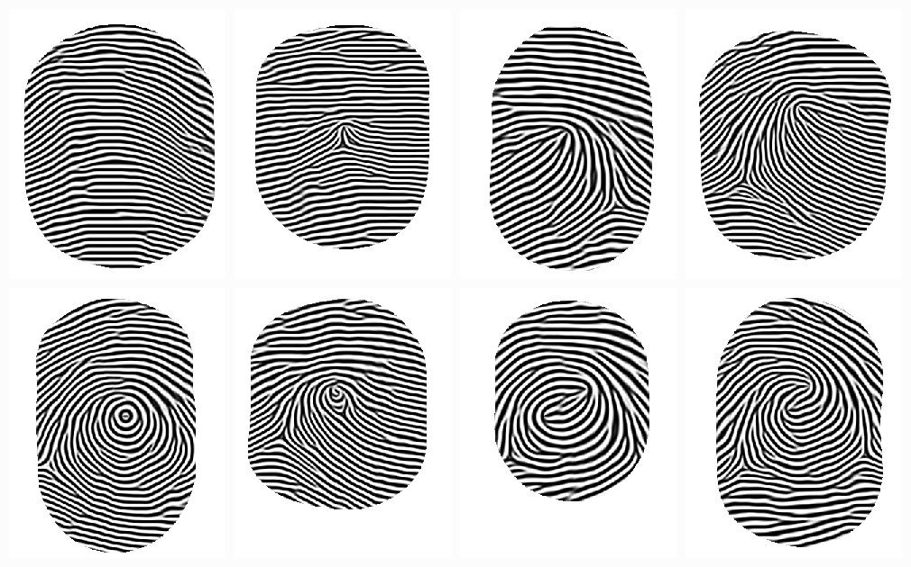
Figure 3: One print per class, forced rather than drawn. Top row: plain arch, tented arch, left loop, right loop. Bottom row: plain whorl, central pocket, double loop, accidental.
[ contents ]
Ridge direction at every pixel comes from the zero-pole model of Sherlock and Monro. Cores act as zeros and deltas as poles of a complex function whose argument, halved, gives the ridge angle.
theta(p) = tilt + 1/2 · ( Σcores g(arg(p − c)) − Σdeltas g(arg(p − d)) )
The function g is the piecewise linear sector correction of Vizcaya and Gerhardt, interpolating between eight per-point offsets. Far from any singular point the sums cancel and the field settles to horizontal plus a small global tilt. A plain arch has no singular points at all and instead uses a smooth rational field with a single apex.
The result is quantised into 32 orientation bins of 5.6 degrees. That is coarse enough to index a kernel bank cheaply and fine enough that no banding is visible in the finished ridges.
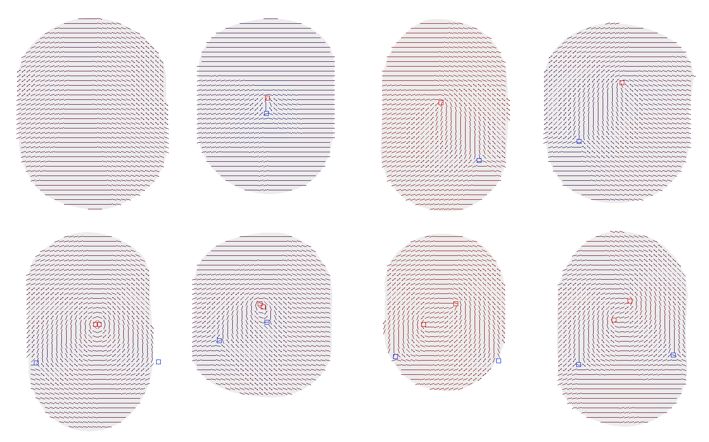
Figure 4: The fields behind Figure 3, sampled every nine pixels. Red squares are cores, blue squares are deltas. Stroke colour encodes the local ridge period, blue for tight and red for wide.
A base period is drawn once per print from a clamped normal distribution centred on 9.4 pixels. It is then modulated across the image: twelve percent tighter near deltas, plus a four percent lattice noise. The result is clamped between 7 and 12 pixels and quantised into 8 bins.
An earlier version also widened the period above the core, which is what the literature describes. That turned out to force a phase dislocation on every whorl: a ring of ridges circling the core passed through a wider zone above and a normal zone below, so the phase could not close, and the growth absorbed the mismatch as a straight vertical seam. Removing the term eliminated the seams entirely.
[ contents ]
This is where the print actually appears. The state is a ternary image: one for ridge, minus one for valley, zero for untouched. It begins empty apart from about 45 nucleation points, three by three blocks placed by Poisson disk sampling with a minimum spacing of two ridge periods, plus one on each core and delta. Every pass replaces each pixel inside the silhouette with the sign of its Gabor response, where the kernel is selected by that pixel's own orientation and period bins.
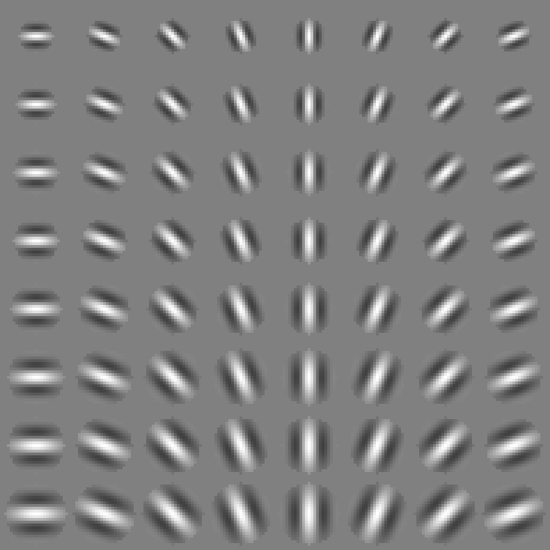
Figure 5: The kernel bank. Rows are ridge period from 7 to 12 pixels, columns are orientation from 0 to 157.5 degrees; every fourth of the 32 stored orientations is shown. All 256 kernels are built once when the module loads.
Each kernel has a circular support of radius 0.9 periods, a Gaussian envelope with standard deviation 0.38 periods across the ridge and 0.48 along it, and a cosine of one period across. The mean is subtracted so an empty neighbourhood produces exactly zero. Values are quantised to sixteen-bit integers normalised so the absolute sum is 32768, which keeps the accumulator inside a thirty-two bit integer for ternary input.
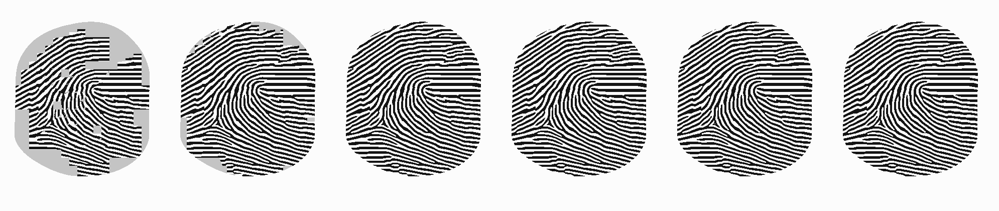
Figure 6: Passes 1, 2, 3, 4, 6 and 8 for one seed. Grey is untouched, black is ridge, white is valley. Fronts expand from each nucleus at roughly the kernel radius per pass, meet, and negotiate their phase difference into ridge endings and bifurcations.
Three decisions determine whether this settles at all.
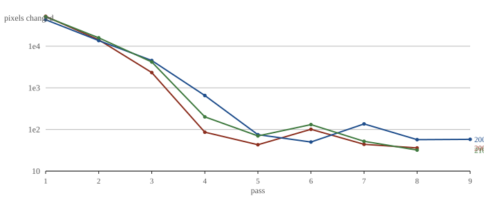
Figure 7: Pixels changed per pass for three seeds, logarithmic scale. Coverage completes in three or four passes; the remainder settles collisions. Growth stops below a threshold of one pixel in a thousand, typically after 5 to 13 passes.
One repair round follows. Any interior pixel whose final response is very weak sits at the centre of a ridge or valley too wide for the kernel to resolve, and a small block of the opposite sign is planted there before settling again. That inserts a ridge ending where two fronts met out of phase, which is what skin does as well.
[ contents ]
The grey image is thresholded, thinned with the Zhang and Suen algorithm, and cleared of staircase corners. Spurs shorter than ten pixels are pruned from every free end first. Without that step, thinning leaves two-pixel forks on ridge tips that read as bifurcations and the type ratio inverts.
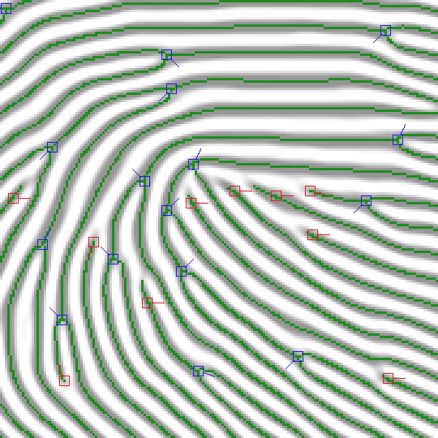
Figure 8: Three times magnification around a core. Green is the thinned skeleton. Red squares mark ridge endings, blue squares mark bifurcations, and the tick shows the assigned direction.
Crossing number on the pruned skeleton gives the type: one for an ending, three for a bifurcation. An ending's direction is the vector to the point reached by walking eight pixels along the ridge. For a bifurcation all three branches are walked, the two with the smallest mutual angle are taken as the fork, and the direction is their bisector, following the convention of ISO 19794-2.
Several filters then run in order, all on integer squared distances. Anything within ten pixels of the silhouette edge is discarded, since those are cuts rather than features. Two endings within six pixels facing each other are a broken ridge and both are removed. Two bifurcations within six pixels are a hole and both are removed. Any surviving pair closer than four pixels keeps only one.
[ contents ]
The tracer runs marching squares over the binary ridge map with a fixed saddle rule, links segments through integer edge identifiers rather than a hash map, and simplifies each closed contour with the Douglas-Peucker algorithm. Output is a single path with the even-odd fill rule, which is exactly correct here because contours from a binary image never cross and nesting strictly alternates ridge and valley.
| Tolerance | Vertices | Bytes | Fidelity |
|---|---|---|---|
| 0.2 px | 7053 | 35526 | indistinguishable from the raster |
| 0.75 px | 1303 | 8576 | 98.3 percent of pixels agree; the default |
| 1.5 px | 640 | 5092 | visible flattening under magnification |
| 3 px | 406 | 3666 | ridge shape degraded |
Figure 9: A traced print at the default tolerance, 9.4 kilobytes of path data, shown here as vector rather than raster.
The encoder writes eight-bit grayscale PNG directly, including its own cyclic redundancy check table, and defers only the deflate step to the platform. It sets the physical dimension chunk so that viewers report 500 dots per inch.
A clean ridge map does not look like a fingerprint; it looks like a diagram. The impression pass supplies what a real contact leaves behind, all of it derived from a forked stream of the same seed:
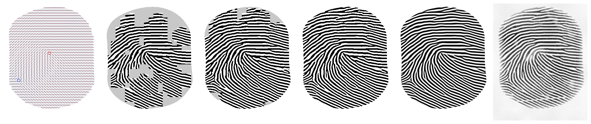
Figure 10: The whole sequence for one seed: orientation field, three growth passes, the converged ridge map, and the impression pass.
[ contents ]
The matcher follows the alignment approach of Ratha and colleagues. For every pair of minutiae, one taken from each print, it hypothesises the rotation and translation mapping one onto the other, transforms the entire first set, and counts one-to-one matches within ten pixels and twenty-five degrees, scoring a type mismatch at half weight. The second set is bucketed into a sixteen pixel grid so each lookup touches at most four cells, and a hypothesis is abandoned as soon as it cannot beat the best already found.
score = matched2 / ( |A| · |B| )
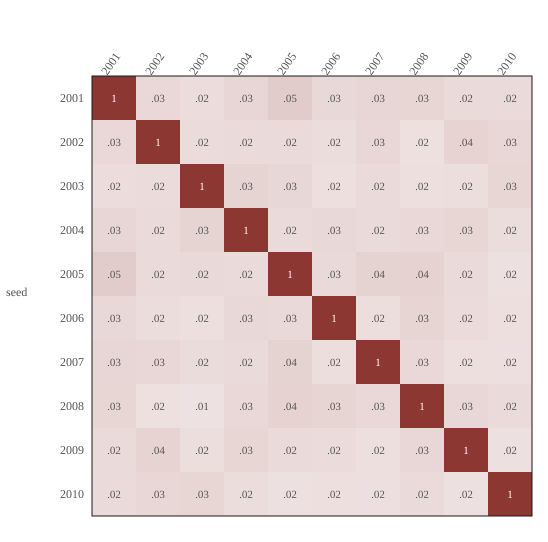
Figure 11: All pairwise scores among ten prints. The diagonal is one by construction. The largest off-diagonal score is 0.048 and the mean is 0.025, so the gap between the same finger and different fingers spans more than an order of magnitude.
| Comparison | Score |
|---|---|
| a print against itself | 1.000 |
| minutiae shifted 9 px right and 5 px up | 1.000 |
| rotated 8 degrees about the centre | 1.000 |
| only the top half retained, 30 of 44 minutiae | 0.682 |
| three unrelated prints | 0.014 to 0.019 |
Anything above 0.3 is the same finger for practical purposes. This is not a forensic matcher. It has no model of elastic skin distortion and it has never been evaluated against anything but its own output.
[ contents ]
The guarantee is that a seed yields identical bytes on every machine and every engine. Two things threaten that in JavaScript.
The obvious one is the ambient random source, and nothing here touches it. All randomness comes from a hash of the seed string feeding an sfc32 generator, with independent sub-streams forked by label for the class, the silhouette, the period map, the nucleation points and the impression pass. Sub-streams are derived from the label rather than the parent's draw count, so adding a draw in one stage cannot shift another.
The subtle one is that the standard library's transcendental functions are not required to be correctly rounded. Implementations of sine, exponential and arctangent differ in their final bits between engines, and have changed between versions of the same engine. A one-unit difference in a kernel value flips a pixel, and a flipped pixel changes every pass after it.
So none of them are used. The library carries its own sine, cosine, exponential and arctangent, built from addition, multiplication and division only, which the floating point standard requires to be correctly rounded everywhere. Each performs range reduction followed by a Taylor series, accurate to better than one part in a billion against the platform implementation. Every value that reaches a pixel is then quantised, into an orientation bin, a period bin or a sixteen-bit kernel weight, so even that residual error has no path to the output. The growth loop itself is entirely integer arithmetic.
The test suite pins hashes of the pixel buffer for six seeds and one rendered impression. A change to any of them is a breaking change, because somebody's stored seeds would then mean something different. The demo in section 2 is the practical check: it runs the same code in your browser and reproduces the figures generated on the author's machine.
[ contents ]
Measured from the built package on a laptop, Node 22.23, single threaded, after warm-up.
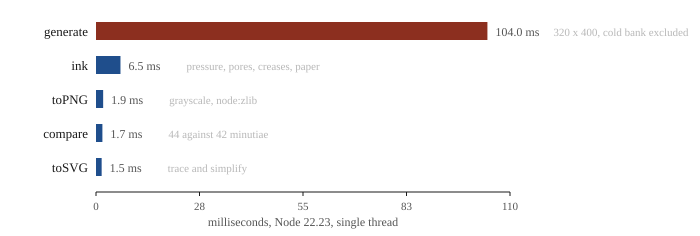
Figure 12: Cost per operation. Generation dominates; every other entry is small enough to ignore.
Growth accounts for nearly all of it: about 215 multiply-accumulate operations per pixel per pass, across roughly 83 thousand masked pixels, for 5 to 13 passes. Block skipping reduces the later passes to only the regions still moving. No memory is allocated inside any loop and the kernel bank is shared across every call in the process.
Several things were tried and rejected. Fourier convolution gains nothing because the kernel varies per pixel. The rotated Gabor kernel is not separable off-axis. Skipping zero-valued taps costs more in branch misprediction than the multiply it saves. Growing at half resolution first fails because a period of three or four pixels is below what a discretised kernel represents cleanly.
[ contents ]
The figures below come from one thousand consecutive seeds. The same run is executed by the test suite as a distribution check. The raw data is in population.json.
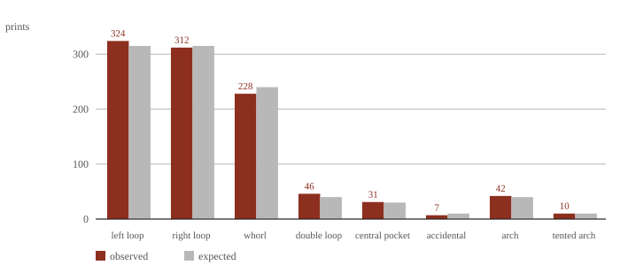
Figure 13: Observed class counts against the configured weights over 1000 seeds. Aggregating the subtypes gives 636 loops, 312 whorls and 52 arches against expectations of 630, 320 and 50.
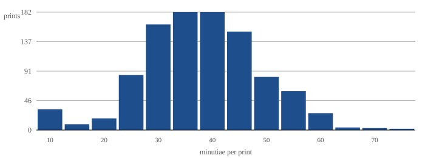
Figure 14: Minutiae per print. Median 40, fifth percentile 23, ninety-fifth percentile 58, with a thin tail in both directions.
| Quantity | Value |
|---|---|
| mean ridge period | 9.39 px |
| median minutiae per print | 40 |
| minutiae range observed | 3 to 87 |
| mean ratio of endings to bifurcations | 1.12 |
| silhouette coverage | 60 to 70 percent |
Real rolled prints carry roughly two endings for every bifurcation. This generator produces close to parity, a discrepancy discussed below.
[ contents ]
[ contents ]
import { generate, ink, toSVG, compare } from 'actual-fingerprints'
import { toPNG } from 'actual-fingerprints/node'
const print = generate('citizen-4821')
print.pattern // 'right-loop'
print.period // 9.46
print.minutiae[0] // { x: 131, y: 88, angle: 2.36, type: 'ending' }
print.pixels // Uint8Array, 0 is ridge, 255 is paper
writeFileSync('print.png', toPNG(ink(print)))
compare(print, generate('citizen-4821')).score // 1
| Signature | Returns |
|---|---|
generate(seed, options?) | A print. Options are width, height, pattern to force a class, and hand to bias loop direction. |
ink(print) | A new print with the same minutiae and pressed-impression pixels. |
toSVG(print, options?) | A string. Options are tolerance, fill and background. |
toRGBA(print) | A Uint8ClampedArray for new ImageData(...). |
compare(a, b) | { score, matched, rotation, dx, dy }. Either side may be a plain { minutiae, width, height }. |
toPNG(print) | A Uint8Array holding grayscale PNG. From actual-fingerprints/node. |
toDataURL(print) | The same image as a data URL. From actual-fingerprints/node. |
seedFor(secret, ...parts) | HMAC-SHA256 hex of the parts under a server secret. From actual-fingerprints/node. |
A print carries seed, width, height, pattern, period, pixels, mask and minutiae. The package ships both module formats with type declarations and has no runtime dependencies. The root entry has no platform imports and bundles for a browser unmodified, as this page demonstrates; actual-fingerprints/node is the only place node:zlib and node:crypto appear.
The same package serves all three runtimes. Install it in the resource project and bundle it like any other dependency, since FiveM's script runtimes have no module loader of their own.
| Runtime | Entry | Use it for |
|---|---|---|
| server script | root and actual-fingerprints/node | seeds, minutiae, matching, PNG for exports |
| NUI page | root | drawing prints to a canvas with toRGBA |
| client script | root | reading minutiae and comparing, not generating |
Generation takes about 100 milliseconds and both the server and the client runtime run scripts on a single thread, so generate in NUI where it costs nothing, cache by seed on the server, and store each character's minutiae at creation so that matching never regenerates anything. For a database search, index by pattern class first and chunk the comparisons across ticks.
Seeds should not be identifiers. Derive them on the server with seedFor under a secret from a convar, and hand a seed to a client only when the game decides a print was found. The NUI can then render it, and nobody can enumerate other people's prints. The build targets Node 16 syntax, which is still FiveM's default server runtime, and the packed tarball is installed and exercised on Node 16, 18 and 20 in continuous integration.
[ contents ]
[ contents ]
Every figure on this page was rendered by the library itself. No fingerprint shown here belongs to anyone. Source and issues at github.com/1etu/actual-fingerprints. MIT licence.